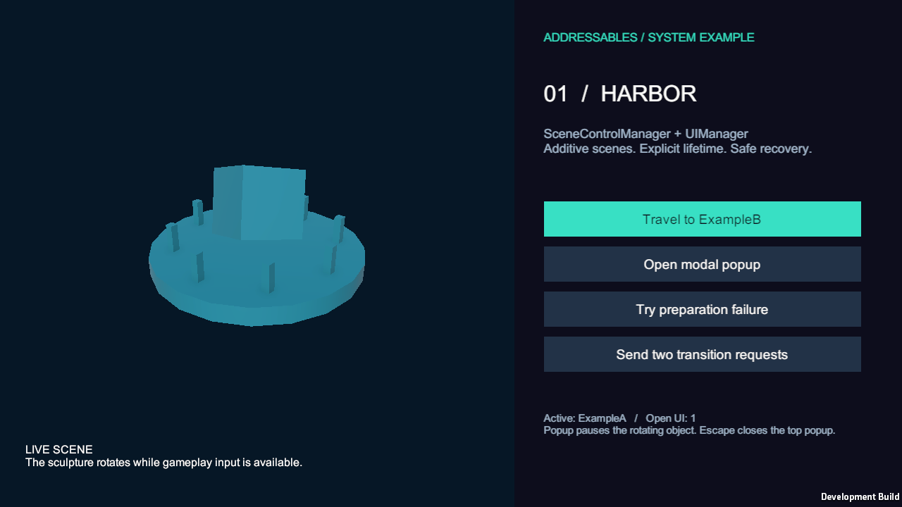
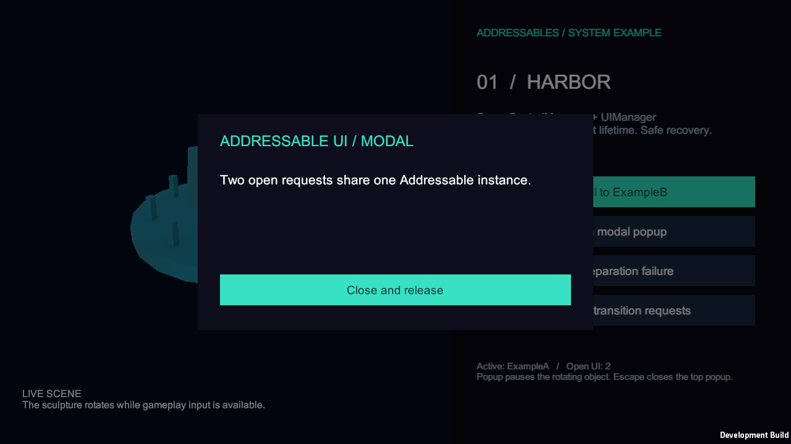
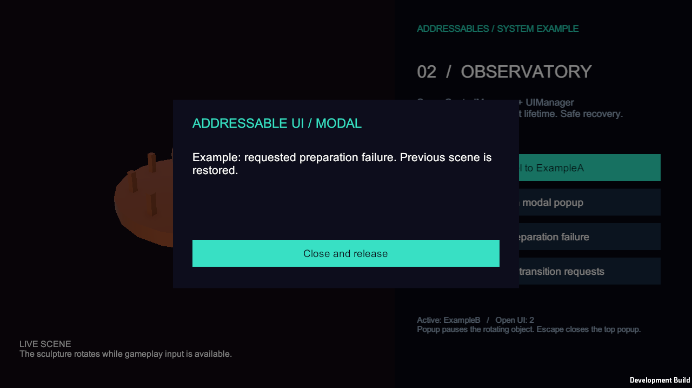

Tracefolio REPORTS & ISSUES
Tracefolio REPORTS & ISSUES씬·UI 시스템을 기존 프로젝트 폴더로 통합
완료독립 Examples 트리를 없애고 기존 Scenes·AddressablesResources·Management·UI·SampleScene으로 통합했습니다. GUID 31개를 보존하고 이동 후 실제 플레이어 검사 57개를 통과했습니다.
작업 결과
기존 프로젝트 구조와 분리했던 예제 배치를 정리했습니다. 폴더 통합·원본 반영·실제 번들 및 Windows 플레이어 실행 검증을 완료했습니다.

변경 내용
적용 내용
| 구분 | 통합 위치 |
|---|---|
| Bootstrap·ExampleA·ExampleB 씬 | Assets/Scenes |
| 로딩·화면·팝업 프리팹 | Assets/AddressablesResources/Prefabs/UI |
| SceneCatalog·UICatalog | Assets/AddressablesResources/Datas |
| 예제 머티리얼 | Assets/ArtResources/Material |
| 씬 관리·Bootstrap 코드 | Assets/Scripts/Management |
| UI 관리·기반 코드 | Assets/Scripts/UI |
| 사용 예제·실행 QA | Assets/Scripts/SampleScene |
기존 Assets/Examples와 Assets/Scripts/Examples 트리 및 불필요한 Management/SceneControl·UI/Management 하위 폴더를 제거했습니다. 중복 README 내용은 기존 사용 문서로 통합했습니다.
파일 31개를 .meta와 함께 이동해 GUID를 보존했습니다. 생성기·Bootstrap 빌드 경로·문서를 새 배치에 맞췄습니다. Addressables 그룹은 Scenes·UI로 정리하고 주소는 기존 Prefabs 그룹처럼 실제 Assets 경로를 사용합니다. 기존 Prefabs 그룹과 Playground·HUD·원본 manifest는 변경하지 않았습니다. 런타임 클래스 이름과 API는 유지합니다.
실행은 기존과 동일하게 Sample Project → Scene UI → Open Example Bootstrap → Play입니다. Bootstrap의 실제 위치는 Assets/Scenes/SceneUIBootstrap.unity입니다.

검증
이동 후 에셋을 재생성하지 않고 실제 Addressables 콘텐츠와 Windows 플레이어를 빌드했습니다. 빌드 성공 크기 155,824,124바이트. 기존 에디터를 보존하기 위해 검증 복사본에서 수행했고 원본과 32개 파일의 내용 해시가 모두 일치했습니다. 빌드 대조.
실행 2026-11-01T16:20:50.3959281+09:00 → 2026-11-01T16:20:58.1328784+09:00, 57개 통과·오류 0개입니다. 왕복 전환·중복 거부·모달·늦은 로드 정리·실패 복구·EventSystem 버튼 레이캐스트·Escape 및 반복 후 개수를 다시 검사했습니다. 실제 QA JSON.
31개 이동 전후 GUID, 카탈로그 참조 7개, 기존 파일 보존을 실제 파일에서 대조했습니다. 현재 소스·설정·사용 문서에 이전 Examples 경로가 남지 않았습니다. 과거 QA와 이력의 당시 경로는 보존했습니다.
실제 렌더 화면 5장을 직접 검토했습니다. 1280×720 원본 PNG를 편집 없이 사용하며 각 200KB 미만입니다. 화면 메타데이터.
문서 첫 빌드는 파일 열기 UNKNOWN 오류로 중단됐습니다. 파일 상태 확인 후 전체 재실행하여 문서 27개·로컬 링크 908개 검사를 통과했습니다. 원인은 미확인으로 남기고 실패·재검증을 메뉴얼에 보존했습니다. record 후 재빌드·검증했으며 snapshotChanges는 0입니다.


남은 사항
재생성 메뉴의 실제 실행과 다른 플랫폼은 이번 후속 검증에서 실행하지 않았습니다. 생성기의 새 경로는 소스·Unity 컴파일로 확인했고 이동한 에셋 그대로의 빌드·실행을 검증했습니다.
교훈 검토: 추가 1개. 사용자가 정정하신 기존 구조 우선 선호를 다른 프로젝트에도 적용할 짧은 규칙으로 전역 지침에 추가했습니다. 별도 요청이나 확인된 기술적 필요가 있는 예외는 보존합니다. Sync.ps1 -Direction Push로 커밋·푸시했으며 설치본·기본 체크아웃·동기화본 해시가 일치합니다. 동기화 근거, 지침 커밋. 다른 실행 중 대화의 자동 반영을 보장하지 않습니다.
게임 프로젝트는 자동 커밋·푸시하지 않았습니다.
작업 시간
- 제안 시간: 10~20분
- 실제로 완료된 시간: 후속 시작 2026-11-01 16:10:07 KST. 이동 후 실행 QA 완료 16:20:58 KST(10분 51초). 보고서 기록 2026-11-01 16:22:20 KST. 공개 배포 확인은 완료 메뉴얼과 최종 채팅에 기록합니다.
- XERJ: 미사용 — 제공된 XERJ 도구·스크립트가 없어 rg로 현재 경로·참조를 검색했습니다.